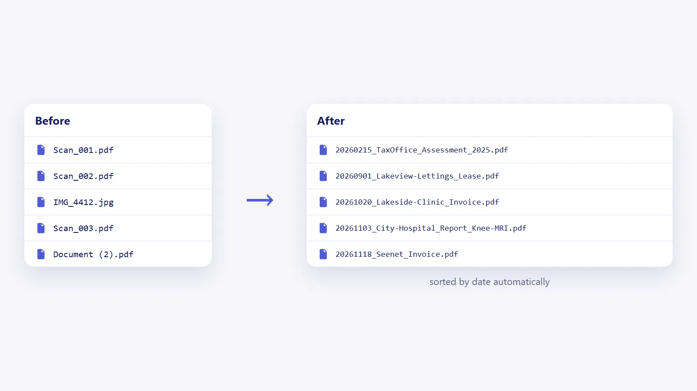

A file naming convention for documents that lasts
Updated 18 November 2026 · Silvan, founder of TidyScan · 6 min read
A folder full of files called Scan_001.pdf, Scan_002.pdf and IMG_4412.jpg is not an archive, it's a pile. The difference between the two is the file name. With a fixed file naming convention you find every document by searching, see it in the right order and need fewer folders. Here is a naming convention that works equally well for invoices, contracts, medical reports and tax documents, and how to name documents automatically instead of typing every name by hand.
The file naming convention: Date_Sender_Type_Topic
YYYYMMDD_Sender_Type_Topic.pdf
| Part | Example | Why |
|---|---|---|
| Date | 20261118 | Sorts correctly on every system |
| Sender | Seenet | All documents from one sender with a single search |
| Type | Invoice | What it is, without opening the file |
| Topic (optional) | Knee-MRI | Tells apart two documents from the same day and sender |
Examples:
20261118_Seenet_Invoice.pdf20261103_City-Hospital_Report_Knee-MRI.pdf20260215_TaxOffice_Assessment_2025.pdf20260901_Landlord_Lease_Flat.pdf

7 rules that keep the naming convention working
- Always write the date as YYYYMMDD.
18.11.2026or11-18-2026sort wrongly,20261118sorts right. Hyphens (2026-11-18) work too, but are longer. - Which date? The date on the document, not the scan date. For invoices, the invoice date.
- Underscore between parts, hyphen within a part.
City-Hospitalstays one part. - No spaces. They cause trouble in links and in some programs.
- No characters that Windows does not allow in file names:
\ / : * ? " < > |. - Short sender, always spelled the same.
Seenet, notSeenet-Ltdone time andseenetthe next. Otherwise the search finds only half. - A fixed list of types. Invoice, Reminder, Credit, Quote, Receipt, Contract, Policy, Payslip, Statement, Tax. Ten words cover almost everything.
Accents and umlauts? Modern systems handle them. If you exchange files with older programs or across operating systems, leave them out.
For Swiss QR bills, the amount goes at the end: …_CHF89.50. Then you see the cost straight from the file list.
Name documents by hand or automatically?
By hand, one name takes about half a minute: find the date, copy the sender, think about the type. At ten documents a month that's doable. The problem isn't time, it's discipline: after three months the first file is called Scan_001.pdf again.
Naming automatically means an app reads the document and suggests the name. This is how TidyScan does it:
- Offline on the phone: text recognition reads the first page. Rules find the date, the sender (known companies, company lines such as «Example Ltd», web addresses) and the type.
- With AI (optional): with your consent, the AI also suggests a topic and recognises unknown senders.
- Swiss QR bill: payee and amount come straight from the QR code (see Swiss QR bill).
- Learns from corrections: change a sender's spelling once, and the app uses your spelling next time.
You see the name before saving and can change it, or you turn confirmation off and let the app file on its own. If you want to name PDFs automatically without thinking about it every time, this saves the most time.
TidyScan is coming to Google Play soon.
Bonus: information inside the PDF
The file name is not the only place for information. A PDF has its own fields for title, author and keywords, which many programs use when searching. TidyScan fills them from the file name: author = sender, keywords = type, topic and folder.
How I name my documents today
I used to name files without any structure at all. Then I moved the date to the front, as YYYYMMDD_examplefile. That was better, but every document still took time and thought.
Since I built TidyScan, I use the automatic text recognition and rarely change anything. No thinking, everything sorted automatically. Naming and filing, I save at least a minute per invoice or document.
Conclusion: a file naming convention means deciding once
You decide on a good file naming convention once and then apply it without thinking: date, sender, type, and a topic if needed. Folders get smaller, search gets reliable and sorting happens by itself. Folders that fit are in the guide folder structure template, and how TidyScan differs from the free scanner in Google Drive is in the comparison. Every TidyScan feature is on the home page.
Frequent questions
Why not just one folder per year?
Because the year is already in the file name. Folders by topic plus the date in the name give you both: the topic through the folder, the time through the sort order.
Should I rename old files?
Don't start with the backlog. Name everything new correctly from today, and rename old files only when you open them anyway.
How can I name PDFs automatically?
With an app that reads the content. TidyScan recognises date, sender and type on the phone and suggests the name, also for PDFs you share from emails.
Does the naming convention work for photos?
For documents, yes. For holiday photos the date the camera already puts in the name is usually enough.